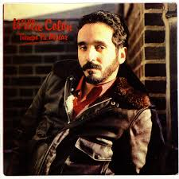

Te Echo De Menos
He creado esta página para recordarte lo mucho que significas para mí. Aunque ahora estemos lejos, quiero que sepas cuánto te extraño y cuánto valoro cada momento que compartimos. Nunca he dejado de pensar en ti, y sigo esperando que podamos volver a compartir nuestras vidas como antes.
Tu Brillo ❤️
Danna, eres única y siempre lo has sido. Aquí algunas de las razones por las que no puedo dejar de pensar en ti:
- ✨ Tu risa, que siempre llenaba de alegría cualquier lugar.
- ❤️ La bondad que reflejabas en cada gesto y cada palabra.
- 🎨 Tu creatividad sin límites, que me inspiraba a ser mejor cada día.
- 💖 Tus ojos, llenos de luz y ternura, los cuales aún recuerdo con cariño.
- 🌺 Tu cabello, siempre radiante y lleno de vida, como tú.
- 🌈 Tu sonrisa, capaz de transformar mis días más oscuros en los más brillantes.
- 🌟 Tu presencia, que siempre llenaba todo de paz y amor.
Mensajes ❤️
"Cada día sin ti es un recordatorio de lo que más extraño en mi vida."
Danna, siempre has sido especial para mí, y nunca ha pasado un día sin que piense en ti. Quiero que sepas que siempre estaré aquí, esperando con la esperanza de que podamos reconstruir lo que tuvimos. Todo lo que compartimos sigue vivo en mi corazón, y te extraño más de lo que las palabras pueden expresar.
Nuestra Playlist 🎶
La música siempre ha sido algo que nos conectaba. Estas canciones siempre me recuerdan a ti y a los momentos que compartimos:
-  Gitana- willie colon
- igual que ayer - maelo
Dedicatoria ❤️
Danna, no hay día que pase sin que te piense. Fuiste, eres y siempre serás una persona muy especial para mí. Sé que las cosas no salieron como esperábamos, pero mi corazón aún te pertenece. Cada momento que vivimos juntos sigue siendo un tesoro en mi memoria, y aunque no estemos juntos ahora, mi cariño por ti sigue intacto.
Te extraño más de lo que puedo decir, y solo espero que algún día podamos encontrar un camino de vuelta.
Recuerdos Inolvidables
Los momentos que vivimos juntos siguen presentes en mi corazón:
- El tiempo que pasábamos hablando, perdiendo la noción de las horas porque todo a tu lado era perfecto.
- Nuestras caminatas interminables, compartiendo risas, secretos y sueños.
- Cada pequeño gesto de cariño, desde las miradas cómplices hasta los silencios que lo decían todo.
Agradecimientos ❤️
Gracias, Danna, por todo lo que fuiste en mi vida. Por cada sonrisa, cada palabra, cada momento. Aunque ahora estemos separados, no dejo de agradecer por haberte conocido. Espero que algún día podamos volver a ser parte del uno del otro, pero hasta entonces, quiero que sepas que siempre estaré aquí para ti.
Recuerdos Especiales ❤️
Este espacio es solo para ti, para recordarte lo mucho que te extraño y lo especial que siempre serás para mí.